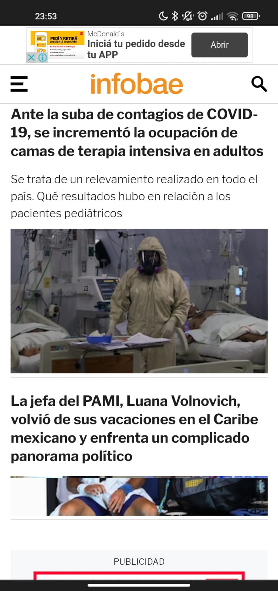

Repetition
despegar.com.arThe proper repetition of the Logo color amon with the page design provides a sense of belonging an enhance the user experience. If you could see, both of the colors of the Logo are used in the page layout.
Contrast
infobae.com.ar The proper use of contrast in a news page is a kee element of design, due to the easiest of reading the information with good contrast colors between the background and the text colors.
Rule of Thirds
despegar.com.arThe proper use of the rule of thirds creates more tension, energy and interes in the picture.